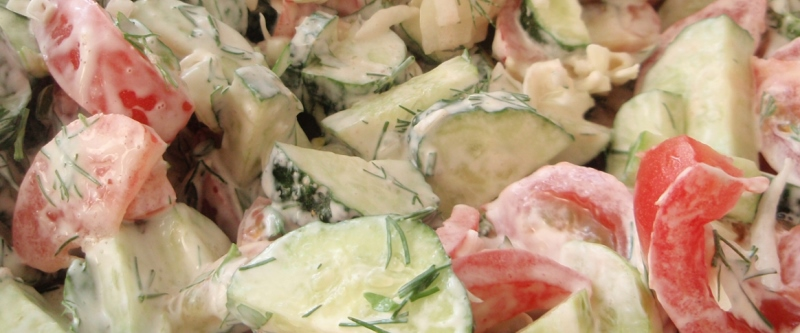

Летний салат

- помидоры
- белокочанная капуста
- зелёный лук
- зелень
- огурцы
- сметана
Помидоры с капустой, зеленым луком и зеленью порезать. Огурцы по желанию. Приправить солью, черным перцем и сметаной.
 Назад к списку рецептов
Назад к списку рецептов